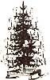
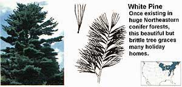
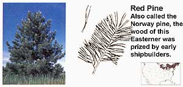
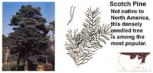
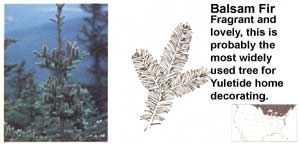
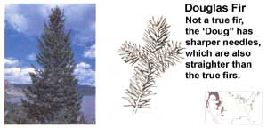
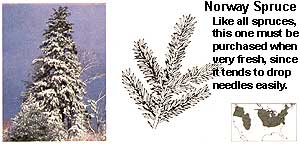
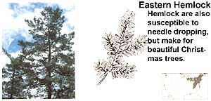
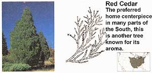
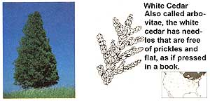

Each conifer variety offers something special.
Think of a Christmas tree lot as a sort of forest concentrate, pure evergreen. At least 50 different kinds of conifers are sold as Christmas trees in the U.S., and a half-dozen or more species may be available on a single lot in any given area.
But which is which? Other than an arboretum, there's no better place to learn the differences among conifers than a tree lot, where you can compare similar-looking species needle to needle, branch to branch.
Often, it's the needles that tell the entire tale. If the needles are growing in clusters, with each cluster bound at the base by a papery sheath extending from a single point on the branch, you're looking at a pine. Among conifers, only the pines bear needles in groups.
If you count five needles in each cluster, you've found a white pine (Pinus strobus), the tree that once blanketed vast areas of the Northeast. Pioneers used to say that a squirrel could travel a lifetime without ever coming down out of the white pines. Its lavish, 2" to 4" light green needles and conical shape make P. strobus a favored Christmas tree throughout its natural range, but its brittle branches make shipping to other areas difficult. A Western variety of white pine, P. monticola, has shorter, stouter needles-also in bundles of five.
Groups of two flexible, shiny green needles up to 6" long suggest the red pine (P. resinosa), sometimes called Norway pine, long the shipbuilder's preferred tree for masts and decking. Shorter, slightly twisted, blue-green needles in bundles of two indicate the venerable Scotch pine (P. sylvestris), our only naturalized nonnative conifer. Its sturdy boughs and dense, long-lasting foliage have made the Scotch the number one Christmas tree in many parts of the country.
In the South, a much-favored tree is the Virginia pine (P. virginiana) -almost a dead ringer for the Scotch, but lacking the European's bluish cast. On the California coast, you'll find the Monterey pine (P. radiata), its grass-green needles borne in clusters of three. The heat-tolerant Afghan pine ( P. eldarica) often decorates homes in the Southwest.
Among many families, however, a pine of any kind is considered a poor excuse for a Christmas tree; only a fir will do. Firs have short, flat needles with rounded tips that are often notched or indented slightly. More important from a holiday perspective, the needles aren't prickly, and hang onto the tree for weeks, even in a warm room. The fir's branches are spaced relatively far apart, so they show ornaments nicely (but sometimes need lots of decorations to fill gaps near the top and middle of the tree).
The balsam fir (Abies balsamea) is the classic Christmas tree, the main reason being plain as the nose on your face: It's wonderfully fragrant, the stuff of which Christmas and the North Woods-and countless balsam pillowsare made. The balsam fir's 1/2" to 1" shiny, dark green needles have two narrow whitish bands on their undersides, and grow almost at right angles to the branch-crosslike-except at the branch tips, where the needles curve upward slightly. Lightercolored needles nearly twice as long as the balsam's, without whitish undersides, belong to the white fir (A. concolor), a best-selling variety in the West and Southwest. Other popular firs include the noble fir (A. procera), a Northwest native with curved needles that resemble tiny hockey sticks, and the Fraser fir (A. fraseri), an Appalachian variety that closely resembles the balsam-but the white bands on the undersides of its needles are relatively broad, and the Fraser actually holds its needles even longer than the balsam. The Douglas fir (Pseudotsuga menziesii), not a true fir, is also well liked. Its bright green needles are straighter than other firs, and the buds along its branches are pointed rather than rounded (a characteristic of other firs).
For classic Christmas tree shape, the spruces are naturals. Growers seldom need to shear spruces more than two or three times in the nine or 10 years it takes to raise a marketable tree. Spruces and firs are sometimes confused, but they're really easy to tell apart. Just grab a handful of branch. Fir needles are soft, but spruce needles are stiff and sharp; there's no mistaking the difference. A more scientific and less painful way to distinguish a spruce from a fir is to pull a few needles off: A spruce will leave a short spur on the branch, but a fir leaves only a flat, round scar. If you look back along a branch of either type, you'll see the distinguishing marks where needles have been shed. Also, spruce needles are four-sided-not flat-and appear to have been brushed toward the tip of the branch.
The spruce's sturdy limbs make it a good choice if you have lots of ornaments and decorations; it'll hold all you can pile on. Unfortunately, spruces also lose their needles readily. If you're among the many people who prefer a spruce Christmas tree, be sure to buy one fresh (see the sidebar) and keep it well watered. The most popular spruces are the Norway spruce (Picea abies), with 1/2" to 1 " shiny, dark green needles; the white spruce (P. glauca), with short, blue-green needles that smell vaguely skunklike when crushed; the Colorado blue spruce (P. pungens), which holds its blue-green needles relatively well; and the black spruce (P. mariana), a Northern variety nearly as aromatic as balsam.
Hemlocks, too, drop their needles more quickly than pines or firs. But their flat, feathery boughs filled with soft, fragrant, blunt-tipped needles-dark green on top and silvery beneath-make a beautiful Christmas tree, especially appropriate for small lights and tiny, delicate ornaments. The hemlock's most telltale characteristics are its drooping branches and downcurved top-entirely unlike the rigid limbs and spirelike tops of pines, firs and spruces. The Eastern hemlock (Tsuga canadensis) is the most widely distributed of the four species that grow in North America. For many people, particularly Southerners, cedar is the traditional Christmas tree. Eastern red cedar ((Funiperus virginiana) has tiny, triangular leaves that lie flush against the branch, creating four-sided twigs covered with bright green scales. The tips of other branches, however, are often armed with needle-sharp spines, making decorating the tree a prickly job. Still, the slender, feathery-branched red cedar is rapidly gaining popularity, thanks to its oldfashioned "country" look and pungent aroma-like that of a freshly sharpened pencil (in fact, high-quality pencils are made of red cedar). An equally aromatic relative is the Atlantic white cedar or arborvitae (Thuja occidental is).
It, too, has scalelike leaves-yellow-green above and blue-green below. Of course, all the trees we've mentioned here can be purchased live and planted outside after the holidays (in cold climates, store the tree outside but wait till spring for planting). Pines generally like lots of sun and acid soil. The cedars, too, can take plenty of solar exposure-but need an alkaline soil. Unless you live where the soil is naturally sweet, add ground limestone to the site. Firs and hemlocks prefer fertile soil and a relatively shady spot. Hemlocks, in fact, will thrive in even the darkest location and, because they tolerate frequent pruning, make fine hedges. And the next time you go shopping for a Christmas tree, remember that there's more to consider than just how big or expensive it is, or whether it's fresh. Each species offers something desirable, both as a Christmas tree and as a part of the natural world. Look at all the trees, not just the kind you always buy, and get to know them better.
Obviously, your tree will last longer and look greener if it's fresh when you buy it. Some trees are cut and stored weeks before they actually end up on the market. Unless there's a cut-your-own Christmas tree lot in your area, you'll have to rely on a few tests to make sure the tree you're considering still has some life in it. First, grab a branch about 6" from the tip and pull your hand toward you, letting the branch slip through your fingers. If the tree is fresh, the needles won't come of in your hand. Now lift the tree a couple of inches and slam the trunk sharply on the ground. The green, outside needles shouldn't drop off in significant numbers (the needles on inside branches turn brown and shed naturally each year).
When you get your tree home, saw an inchthick slice off the base and put the trunk in a container or tree stand filled with an inch or more of water. If you're storing the tree for several days before bringing it inside to decorate, keep it in a cool place away from sun and wind, and when you bring it inside make another cut across the base to expose fresh tissue before putting the tree in its stand. Naturally, you should avoid placing the tree near a heat source such as a fireplace or register. Christmas trees need a lot of water-a sixfooter can drink a quart or more every day. Use plain water; sugar solutions can seal the tree's pores. Likewise, be sure not to let the water level drop below the base of the tree, or the tissue will dry out and form a barrier; if that happens, you'll need to make a fresh cut. A well-watered tree will stay green and fragrant all season, and even help humidify the room it's in.
|
 ? E.R. DEGGINGER/BRUCE COLEMAN, INC. ILLUSTRATIONS BY DON OSBY |
 ? JOHN SHAW/BRUCE COLEMAN, INC. |
 ? A-Z COLLECTION LTD/PHOTO RESEARCHERS, INC |
|
 ? PATLYNCH/PHOTO RESEARCHERS, INC. |
 ? ROGER AND JOY SPURR/BRUCE COLEMAN, INC. |
 ? E.R. DEGGINGER/BRUCE COLEMAN, INC. |
|
 ? S.L. CRAIG, JR./BRUCE COLEMAN, INC. |
 ? L. WEST/PHOTO RESEARCHERS, INC. |
 ? JOHN SHAW/BRUCE COLEMAN, INC. |
|
 |
|
|